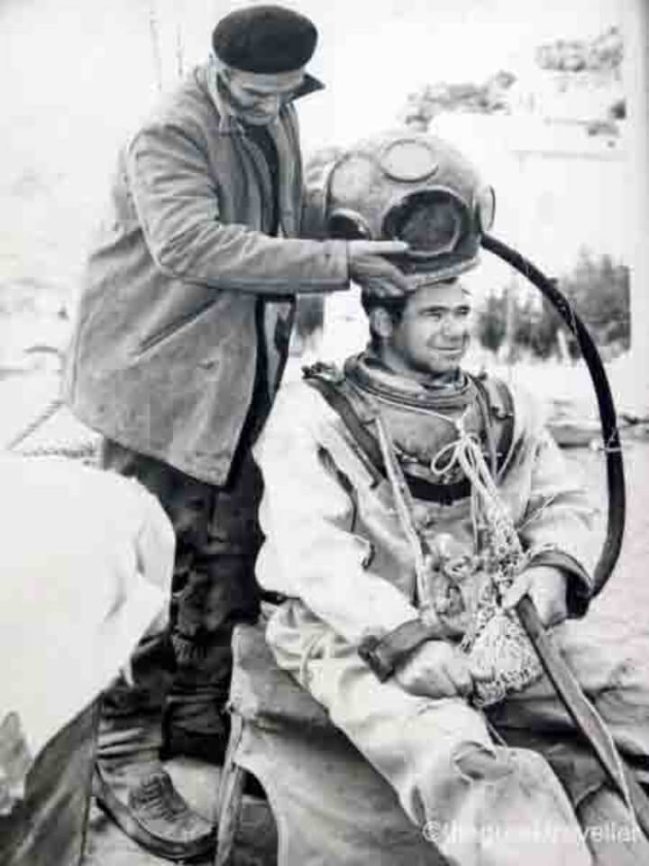

Since the discovery of the Antikythera Mechanism in 1900, the history of unlocking its secrets has been a constant battle. The researchers, were often concluding with a mixture of correct and false hypotheses until the "final solution" was reached (at least as we know it today). It was therefore historically difficult to distill the information throughout the years. What follows is a short summary of the history of decoding the Antikythera mechanism.
Zeroth phase
 After the shipwreck was found (April 1900), the Symian sponge divers returned and started what was about to become the world's first major underwater archaeological expedition. It begun in November 1900 and lasted up to September 1901. Due to the weather difficulties, they were only working about 25% of this time. Further, two separate teams of divers were recruited, since it was extremely dangerous to use the diving suits at the time. Amorphous pieces found on the sea floor were typically cracked open, from the divers already, to check if it was a stone or some ancient artifact. One way or another, the divers must have identified the mechanism as an ancient piece of equipment or art and got it to the museum.
First phase
{kind=link}
When everything arrived at the National Archaeological Museum of Athens, the hype was at first related to the statues. Soon however, the archaeologists as well as the ex-minister of Education, S. Stais, noticed gears and inscriptions on a corroded bronze piece: the Antikythera Mechanism. This artifact was soon brought at the center of attention (newspapers etc.), whereby various people were fascinated and started to study it. However, due to the corrosion, it was impossible to see its inner structure. This did not stop individuals like Byzantinos, A. Wilhelm, I. Svoronos, P. Rediades, A. Rehm, V. Stais, K. Rados, H. Diels, A. Schlachter, R. Gunther, I. Theofanides, E. Zinner, W. Hartner, G. Karo and others to think about it. They were a mixture of archaeologists, classical philologists, scholars, naval officers, jurists, numismatologists as well as epigraphists due to the large amount of ancient inscriptions found on the mechanism. As we can see, history of science was still at its infancy. The opinions about the mechanism's function varied a lot. People first thought it was an astrolabe but soon they realized that its complexity went way beyond that. Further ideas were: a "special astrolabe" which could solve astronomical problems, a compass, a sundial, a component of the ship, a planetarium, an orrery etc. What was immediately agreed upon, was that a) it was of uttermost technological importance, with nothing like that ever discovered before, and b) the inscriptions engraved all over it were a kind of a user-manual. Theofanides was the first to try and revive it in terms of a real model, despite the difficulties we described. We can call this the first phase of studies on the Antikythera mechanism.
Second phase
{kind=link}
In the 50's, a small team of scientists composed of the physicists Derek J. de Solla Price, Ch. Karakalos, and the epigrapher G. Stamires made the next attempt to try and decode this mythical beast. This time they used x-ray radiography, from which the basic architecture of the Mechanism and its main inner structure was first revealed. Importantly, the 19-year Metonic Cycle was identified as part of the gearing. Still, the problem is that with radiography the third direction (depth) is lost and so we still didn't know how the gear layers were arranged. Nevertheless, it is official now that this geared device is a calendar computer of unique importance, with a possible planetarium on the front side. It fundamentally changes our general understanding about ancient technology. Price made a reconstruction of the device.
Third phase
{kind=link}
In the 80's, Michael Wright (mechanical engineering curator) and Allan Bromley (historian of computing) start the discussion again. By using linear x-ray tomography, they were able to make some more precise observations, identify yet more gears, suggest new gearing schemes, possible eclipse predictions and also spiral structures on the back side. The upper 5-turn spiral was correctly attributed to the Metonic Calendar. The phase of the moon mechanism by means of two perpendicular gears, one of which is epicyclic, was identified. A differential gearing thereby, was also suggested in order to calculate and show the lunar phase. Further, the pin-and-slot lunar mechanism was spotted, although the explanation given at the time was different to what we now know as correct. A planetarium was also proposed, although there is no direct evidence for this in terms of surviving gears. These were all pioneering results in decoding the machine. Both researchers made working models of the mechanism based on their findings. It is clear that the Antikythera Mechanism was one and a half millennia ahead of its time.
Fourth phase
{kind=link}
A large team was put together in the early 2000's, led by the astronomer M. Edmunds, mathematician T. Freeth and astrophysicist X. Moussas: the Antikythera Mechanism Research Project. The point was to obtain an overall comprehensive picture of the mechanism and its functions, by means of the most up-to-date technology and interdisciplinary scientific interaction. It may not be an exaggeration to state that hundreds of modern computers were used in the process of decoding this ancient device, the world's first computer. A 3D x-ray tomographer, the "Bladerunner" of X-Tek Systems was employed, using microfocus beam techniques. This eight-tonne machine was carried to the museum in Athens, since the mechanism itself is not allowed to move due to its fragility. The 3D pictures obtained in this way, have an accuracy of better than 0.1 mm and enabled to see all gears, count their teeth with high confidence and unexpectedly read inscriptions buried for over two millennia inside the fragments! The inscriptions were instrumental in inferring all the functions, as we know them today, since not the whole mechanism has survived. Further, a team by Hewlett Packard used a novel technique, called RTI or PTM (Reflectance Transformation Imaging / Polynomial Texture Mapping). A dome is placed above the studied object and many still photographs are taken under varying lighting directions. This results in very fine details, for example reading worn-out inscriptions on the mechanism's surface. Amongst the key-findings are a Saros eclipse prediction dial utilizing a 223-teeth gear, a variable moon motion correctly assigned for the first time, two epicyclic gearings and a differential gearing to get the lunar phase, as M. Wright had suggested! This whole project led to an overall understanding of the mechanism and lots of revived interest from a world-wide community of scientists that are still occupied with this and its extensions.
Future
{kind=link}
A large program has been initiated since 2012, whereby the seabed at and around the Antikythera shipwreck is re-examined with yet newer technology. We are tuned to this exciting project of the Hellenic Ministry of Culture and Sports with support from the Woods Hole Oceanographic Institution.